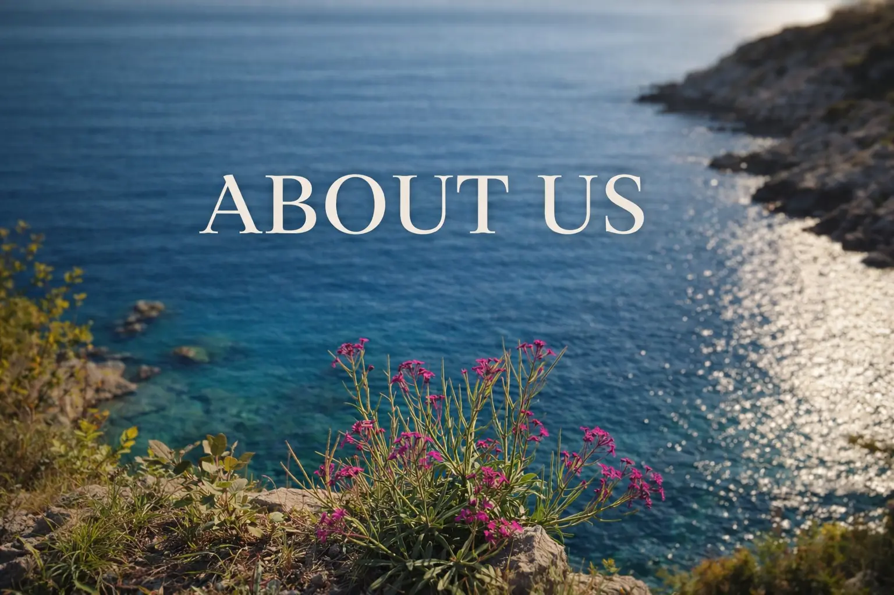
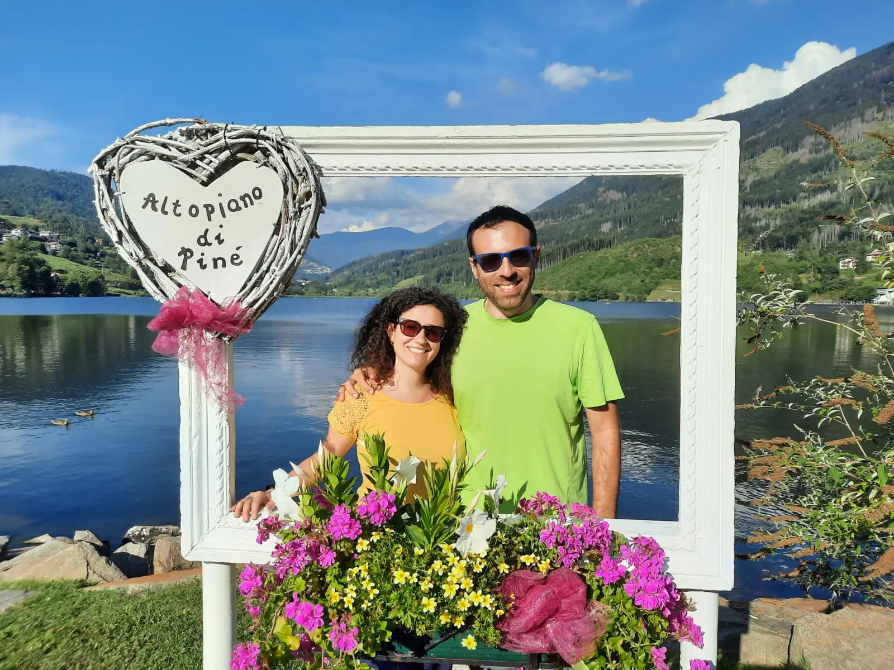
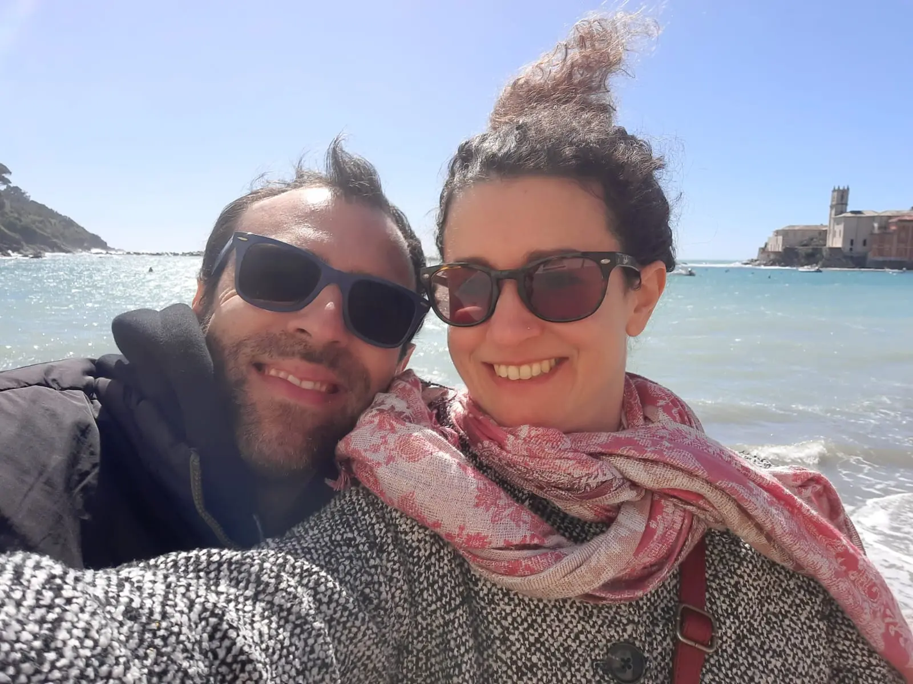
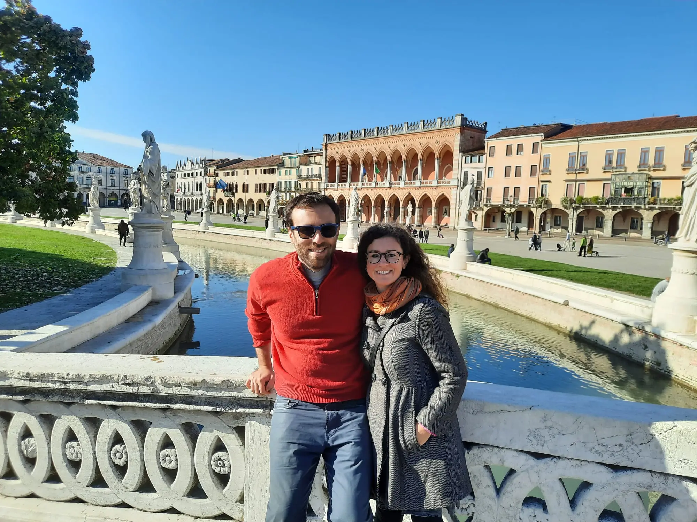
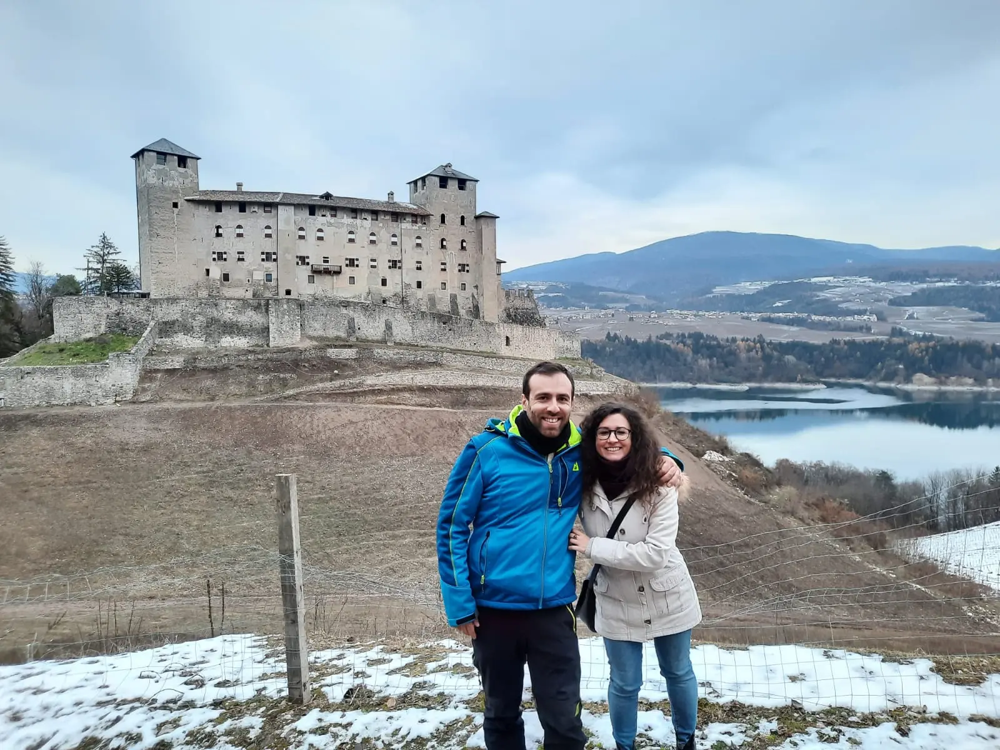
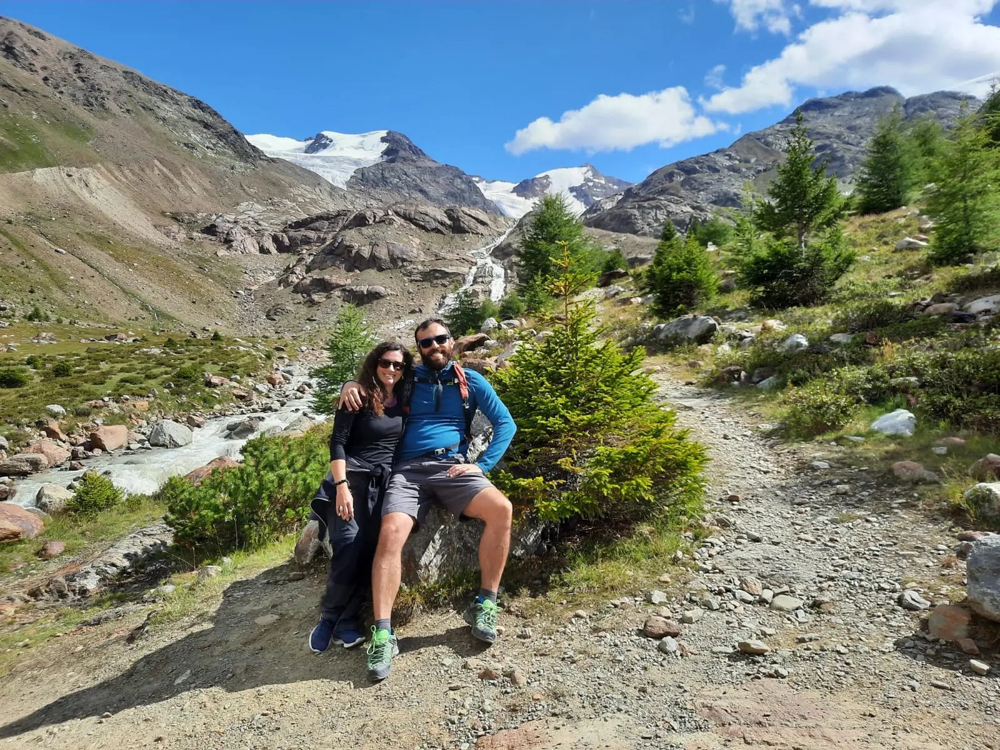
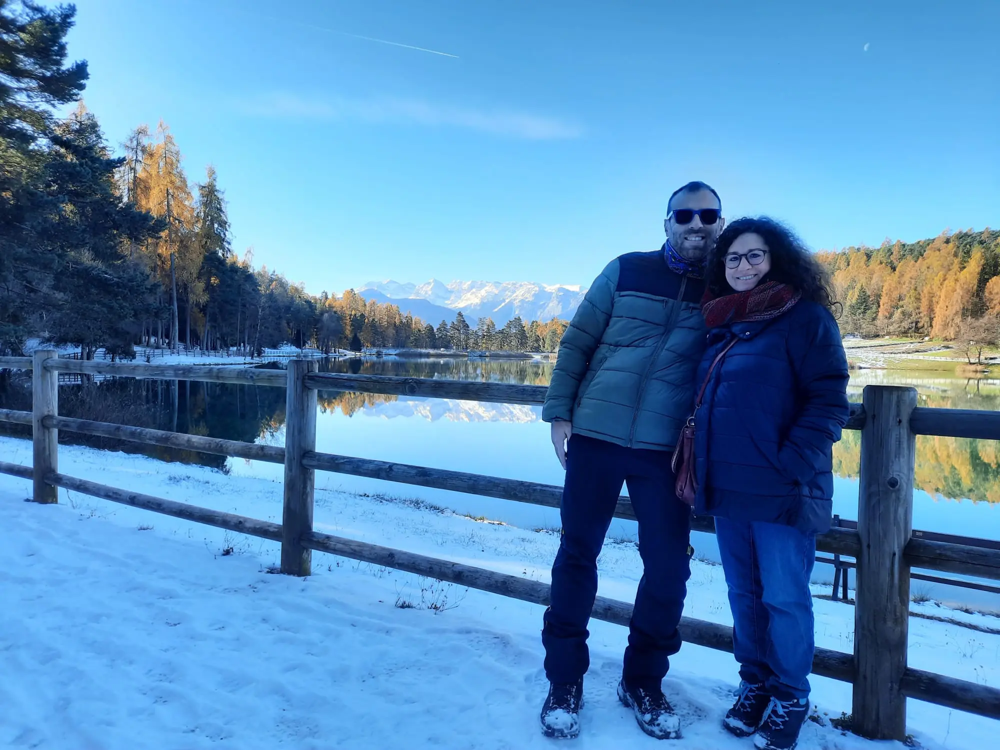

Ricky and Anna met in 2021 and immediately shared a passion for travel. Many of their journeys have taken them across their beloved Italy, from the mountains of Aosta Valley to the sea of Sicily, creating countless unforgettable experiences together.
They got married in 2023 in a beautiful location on the Lombardy side of Lake Maggiore. In 2025, they first became parents and then moved to Milan, their hometown, and to a small village on the Ligurian Riviera.

Baselga di Pinè, Trentino

Baia del Silenzio, Sestri Levante, Liguria

Prato della Valle, Padova

Cles Castle, Trentino

Forni Valley, Stelvio National Park

Coredo and Tavon Lakes, Trentino
ItalyinFrames.com was born from Ricky’s long-standing passion for writing, combined with a more recent interest in programming. When he shared the idea with Anna, she immediately loved it, supporting the project with new ideas and content.
As we mentioned on the homepage, this website only includes experiences we have personally lived, starting from when we first met. It is not an encyclopedia built around strict SEO rules, but simply a way to put our experiences into words and help anyone who wants to explore Italy.